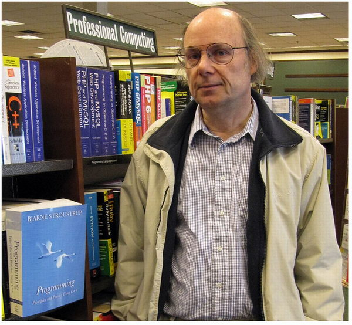

Биография

Бьёрн родился и вырос в городе Орхусе. Поступил в Орхусский университет (Дания) на отделение информатики. Закончив его в 1975 году, он получил степень магистра. В 1979 году защитил диссертацию доктора философии по информатике в Кембриджском университете, работая над конструированием распределённой системы в компьютерной лаборатории Кембриджского университета. Член колледжа Черчилля.
В 1979 году Страуструп вместе со своей женой и дочерью переехал в Нью-Джерси, чтобы пойти работать в компьютерный научно-исследовательский центр «Bell Telephone Laboratories». В этом же году у него родился сын Николас.
Со дня основания до закрытия в 2002 году, когда произошло объединение с отделением научных исследований Техасского университета A&M, Бьёрн был главой отдела исследований в области крупномасштабного программирования (Large-scale Programming Research department) в компании AT&T Bell Labs.